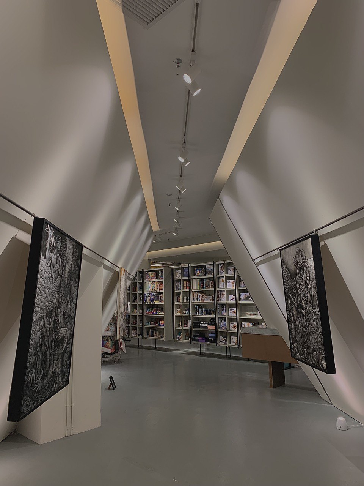
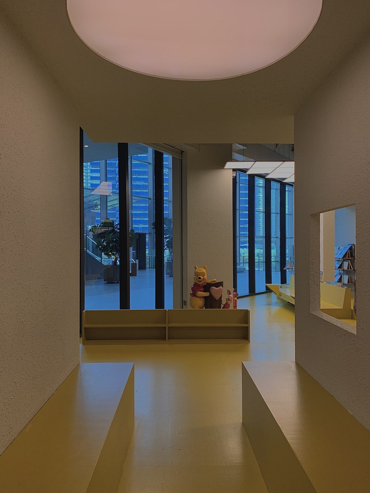
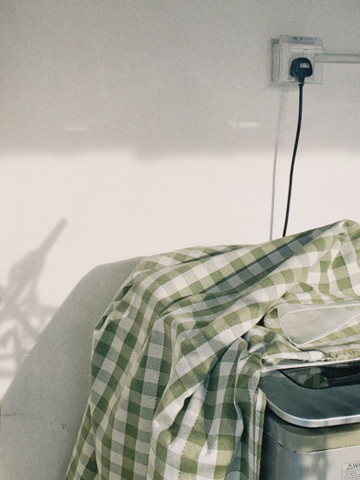
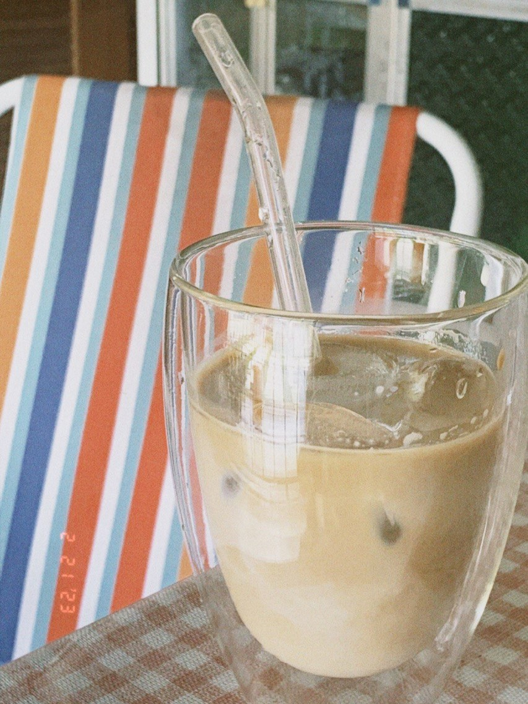
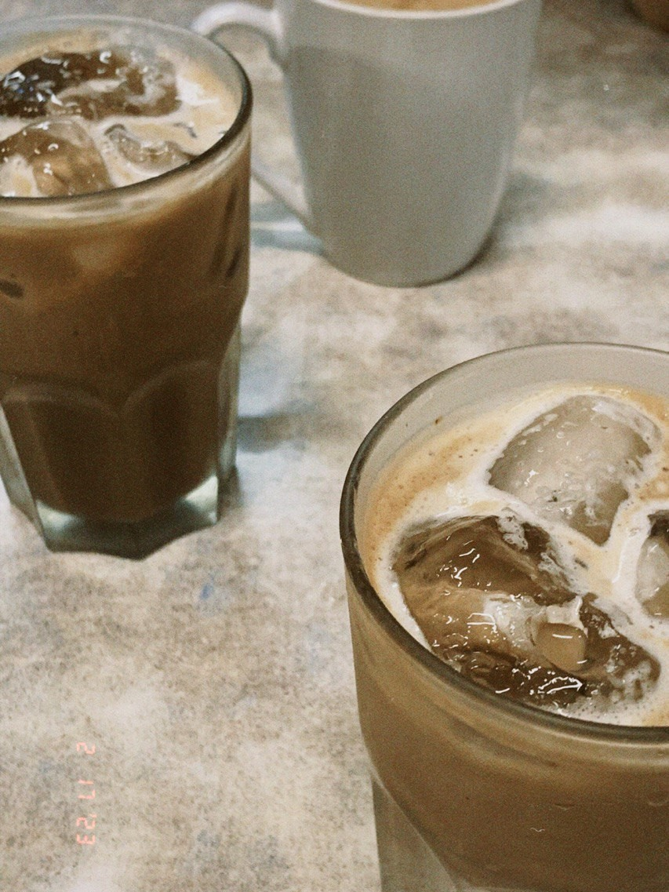
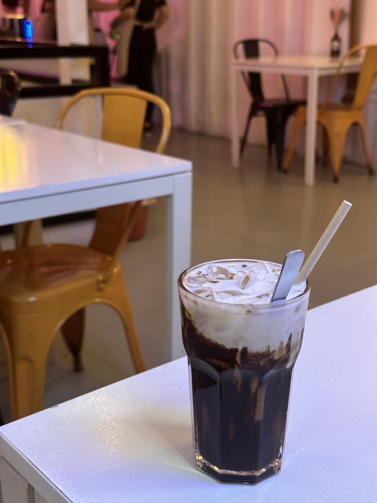

About Me
I'm Caryn Chong Ke Xin and basically my friends call me CC instead.
I am 22 this year and born in 4th of January. I am a capricorn with ISFJ personality.(MBTI)
I was born and raised in Kuching, Sarawak. I have a total of 4 family members, including a sister who is 2 years younger than me.
I actually pursue a few such as singing,taking photographs, drawing, hiking, camping, and so on. But among all of the hobbies, the hobby that I enjoyed most of the time is still singing.
Singing while bathing will definitely be a must for singing lovers I guess. For me, I sing whenever I'm in the toilet or bathroom.
I enjoy listening to songs from different genres and languages. During most of my free time excluding surfing over social media, I do learn and cover them.
While I may not be a professional, I enjoy doing it everytime. Besides that, I love taking photographs no matter what or when.
Taking photographs brings me a great sense of satisfaction. It is like capturing every moment you tresure and preserving those memories with you.
Education
Hobbies
- Primary Education
SJK(C) Chung Hua No.4 - Secondary Education
Kuching High School - Pre-university Education (FORM 6)
SMK Batu Lintang - Tertiary Education
Universiti Malaysia Sarawak
- I have several hobbies such as
Singing
Drawing
Reading
Taking photographs
Here are some of the pictures that I took📷





